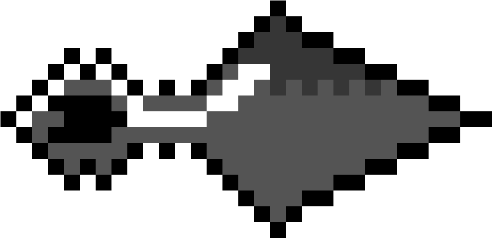
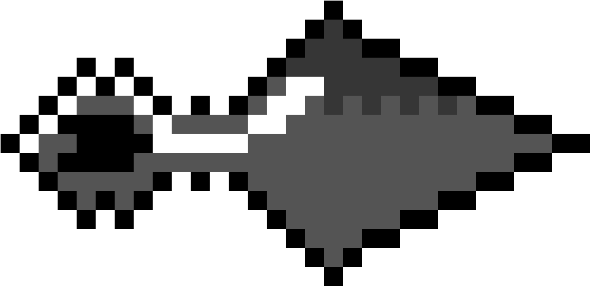
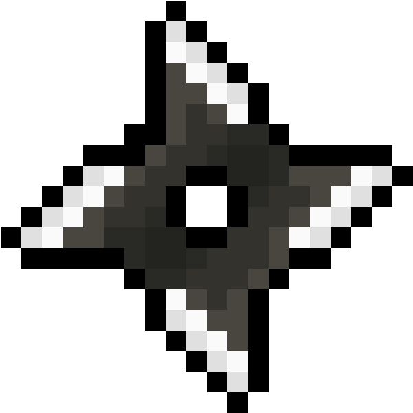

-
PAIN
Vila Oculta da Chuva
 
30
211
Descrição
Nagato, ou Pain, foi um dos fundadores da Akatsuki e é um dos ninjas mais poderosos de toda a trama de Naruto. Após conseguir o Rinnegan, Nagato desenvolveu a técnica dos Seis Caminhos de Pain e criou guerreiros que ele poderia controlar utilizando corpos de outros ninjas, incluindo seu amigo Yahiko. O ninja possui o Rinnegan, que dá habilidades incríveis ao portador, como a manipulação de forças da natureza e até mesmo leitura de mentes. A força de Nagato é tanta que ele conseguiu destruir Konoha inteiro.
-
TOBI
Vila Oculta da Folha

21
200
Descrição
Tobi sempre foi um dos membros mais misteriosos da Akatsuki, até que, durante a Quarta Guerra Mundial Shinobi, foi descoberto que ele era, na verdade, Obito Uchiha, que todos acreditavam ter morrido no passado. Obito também consegue utilizar o Mangekyo Sharingan e é um dos ninjas mais fortes do clã Uchiha, tendo habilidades como a Liberação do Fogo natural e até mesmo a capacidade de criar portais.
-
ITACHI
Vila Oculta da Folha

14
218
Descrição
O gênio do clã Uchiha, Itachi, entrou para a segunda formação da Akatsuki após assassinar todo o seu clã em Konoha, com exceção de seu irmão Sasuke. O jovem é um mestre do genjutsu e consegue criar ilusões de forma muito natural. Além disso, Itachi controla as liberações do fogo e da água, e sua principal habilidade é o Mangekyo Sharingan, que lhe permite utilizar jutsus inigualáveis, como o Amaterasu.
-
OROCHIMARU
Vila Oculta da Folha

12
198
Descrição
Orochimaru é um dos três Sannin lendários de Konoha, junto de Jiraya e Tsunade. Após fazer experimentos antiéticos com os ninjas de sua vila, o nukenin se virou contra a Vila da Folha e entrou para a Akatsuki, mas acabou saindo da organização após tentar roubar o sharingan de Itachi e falhar. O ninja é um dos mais poderosos de toda a história de Naruto e fez dezenas de experimentos com seu corpo, o que permite a ele ter resistência e força sobre-humanas, além de controlar cobras e até mesmo se transformar em uma.
-
SASORI
Vila Oculta da Areia

21
200
Descrição
Sasori é um mestre na arte das marionetes e entrou para a Akatsuki após uma infância triste e sem amor dos pais na Vila da Areia. O jovem foi criado e treinado por sua avó e se tornou um dos ninjas mais fortes de sua vila. A principal habilidade do ninja é a manipulação de marionetes feitas a partir dos corpos de seus adversários. O nukenin conta com uma coleção de mais de 300 fantoches para suas batalhas.
-
KONAN
Vila Oculta da Chuva

12
120
Descrição
Discípula de Jiraya e parceira de Nagato e Yahiko, Konan criou a Akatsuki junto de seus amigos para lutar contra o poder autoritário de sua vila e levar a paz ao mundo. Ela é uma das ninjas mais poderosas da organização e sempre foi leal a Nagato. Konan conseguiu chegar à maestria com a manipulação de origamis e é capaz de criar armas incríveis e mortais com apenas um papel. Ela também pode transformar seu próprio corpo em papel nas batalhas.
-
KISAME
Vila Oculta da Névoa

122
520
Descrição
Conhecido como o Monstro da Névoa Oculta, o ninja foi um dos Sete Espadachins da Névoa até entrar para a organização, tornando-se parceiro de Itachi. O ninja era bastante conhecido dentro da Akatsuki por seu incrível poder com a espada. As principais habilidades de Kisame envolviam a Samehada, sua espada, um ser capaz de absorver chakra. Além disso, era um mestre no taijutsu e travou batalhas contra ninjas como Asuma.
-
KAKUZU
Vila Oculta da Cachoeira

30
211
Descrição
Após falhar na missão como um ninja leal de matar Hashirama Senju, Kakuzu se tornou uma vergonha para sua vila e acabou se virando contra ela, entrando para a Akatsuki. O ninja era parceiro de Hidan e sempre foi muito ganancioso em relação ao dinheiro. O nukenin consegue controlar os cinco elementos e é um mestre no taijutsu, além de roubar os corações de suas vítimas e armazená-los em seu próprio corpo.
-
DEIDARA
Vila Oculta da Pedra

20
230
Descrição
O jovem Deidara era um nukenin de Iwagakure e ajudava rebeldes de diversos países antes de entrar na Akatsuki. O ninja ficou famoso por sua arte com a argila explosiva e suas lutas marcantes, gerando um ódio contra os irmãos Sasuke e Itachi Uchiha. O ninja tem a capacidade de criar bocas nas mãos e manipular a argila explosiva para elaborar verdadeiras bombas em formatos diversos.
-
HIDAN
Vila Oculta das Fontes

12
212
Descrição
Hidan se tornou um dos personagens de Naruto mais amados pelos fãs, e não é de surpreender. O ninja tem uma personalidade excêntrica e sádica, além de seguir a religião do deus Jashin no anime. O personagem tem poderes de semi-imortalidade ao realizar o ritual de Jashin e consegue sobreviver a batalhas intensas, mas pode morrer por falta de nutrientes. Ele já participou de diversas lutas marcantes, como contra Shikamaru.
-
ZETSU
Vila Oculta da Névoa

12
232
Descrição
Zetsu é a união dos dois tipos desse personagem: Zetsu Branco, que foi feito estrategicamente para ser uma arma, e Zetsu Preto, que foi originado a partir da própria Kaguya Otsutsuki e consegue manipular o corpo dos adversários. A junção dos dois tipos cria um vilão muito poderoso que tem habilidades de se fundir com a terra e uma velocidade absurda. O Zetsu, em sua forma Zetsu Preto, já conseguiu realizar grandes feitos, como matar o próprio Madara ao traí-lo.